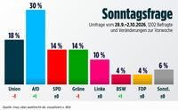

0


The Guardian reports that California governor Gavin Newsom signed laws on Wednesday "aimed at protecting California workers from the threats of artificial intelligence , including potential job losses and workplace surveillance."
The laws ban employers from using the technology to predict a worker's emotional state by using their biometric data, require employers to send written notices to workers if AI is responsible for mass layoffs and ban employers from relying on AI to decide to fire someone... The governor signed a law this month requiring operators of AI chatbots to perform risk assessments before rolling them out and an executive order requiring the state to consult with experts to further improve oversight over the industry.
The law includes "expanded tracking of AI's economic effects" leading to recommendations on how to best "adapt job-training and public-benefit programs," according to the governor's office. "California has also launched an AI Unemployment Tracker and solicited statewide public input on AI's economic impacts through Engaged California."
But two weeks ago Politico reported that the governor also signed executive orders to "explore proposals like requiring that AI companies develop a 'kill switch' for their most advanced models."
Anthropic CEO Dario Amodei, who called for a slowdown in AI development amid existential risk concerns, said... that while a kill switch "could be a good idea," it was no "panacea...." [California lawmakers] were generally supportive of Newsom's plan and showed signs of coalescing around the kill switch idea, which was stripped out of legislation proposed two years ago. Rep. Ted Lieu, who introduced bipartisan kill switch legislation in the House, boosted Newsom's call for Congress to mirror California's approach.
But not everyone supports this approach, including the Free Software Foundation's campaigns manager, Greg Farough:
FSF: Having control over the technology we use is a fundamental part of software freedom. Without it, you simply don't have the basic freedoms you deserve when doing any type of computing, large or small. Don't let "artificial intelligence" be an exception: all users everywhere deserve complete control over their own computing. While it's understandable to be pleased by this news from California, Newsom's executive order also invites questions about the "kill switch" itself that could matter a great deal for freedom. Assuming such a kill switch was developed, who would really control it?
We hope our readers understand the problems inherent in giving one single or a small number of kill switches to anyone. Newsom wisely wants an independent organization to verify their functionality, but even this still sets too dangerous of a precedent. We cannot allow such centralization of power over our computing to become commonplace, especially by the corporations that provide these models in the first place. We also cannot trust even the most well-intentioned "independent organization" to take care of its verification.
Giving users the freedom that they deserve over large languages models would be an enormous departure from how most are developed and used today. But, if any group is capable of coming up with such a plan, it's the experts mentioned in Newsom's order. Like he states at the beginning of his executive order, the vast majority of them are already right there in California. We urge the Government Operations Agency to consider the precedent they are setting, and ask them to write their recommendation to the governor in ways that puts the freedom and dignity of the individual user first and foremost.
The Guardian adds that Newsom also signed an executive order this week "to require state agencies to continue to refer to the technology as 'artificial intelligence' instead of the term 'super intelligence' as Donald Trump recently ordered US diplomats to use."
Read more of this story at Slashdot.
An anonymous reader quotes a report from Ars Technica: Rendering Doom in a database is obviously a bad idea," Lukas Vogel writes in a lengthy blog post explaining how exactly he managed to render Doom using an SQL database. OK, that's not entirely accurate. The SQLDoom project uses a small Python client to handle input and output, drive the game's timing, and display each frame to the screen. Behind that, a series of CedarDB tables tracks the game geometry and state, while about 1,300 lines of SQL queries spread across 89 common table expressions implement the game logic and generate 35 bitmap framebuffers per second.
In this, SQLDoom is a major improvement over Vogel's previous DoomQL project, which last year set out to build "a multiplayer Doom-like shooter entirely in SQL." Unfortunately, that effort ended up with raycasting-based, grayscale ASCII graphics that were more akin to the simplistic 90-degree-angled maps of Wolfenstein 3D. The newer SQLDoom, on the other hand, generates full-color 640x480 frames that look like they could have come from the original Doom executable. [...] If you want to run a Doomtabase on your own local machine, you can do so simply with the GitHub code, a copy of CedarDB, and a Doom WAD file. Or you can jump into a free online hosted demo match to test it out without all the setup [...].
Read more of this story at Slashdot.
An estimated 2.3 million cancer cases worldwide in 2024, about one in eight, were attributable to infections, according to a study published in The Lancet Oncology. "This recent Lancet data is a profound reminder that a significant portion of our global cancer burden is fundamentally preventable," said David Greenberg, MD, of Hackensack Meridian Jersey Shore University Medical Center, in a news release. "We have historically siloed infectious diseases and oncology, but they are deeply intertwined. By shifting our focus toward aggressive infection control, we can literally vaccinate and treat our way out of millions of future cancer diagnoses." From a report: The study found that an estimated 2.3 million new cancer cases were attributable to infections globally in 2024, equivalent to 12% of all cancer cases. Of these, the largest number (760,000 cases, or 4%) were caused by H. pylori, followed by HPV (750,000 cases, or 4%), HBV (360,000 cases, or 2%), EBV (260,000 cases, or 1%) and HCV (160,000 cases). More than three quarters of infection-attributable cancers occurred in low- and middle-income countries. Eastern Asian had the largest burden, with 990,000 cases (42% of the global total). Rates were also higher than the global average in sub-Saharan Africa, Central and Eastern Europe and Southeast Asia.
Read more of this story at Slashdot.
An anonymous reader quotes a report from Reuters: The state of New Mexico asked a judge on Thursday to order Meta Platforms to pay between $35 billion and $40 billion in penalties after a jury found the company had misled consumers about the privacy of their data on Facebook in a case that came out of the Cambridge Analytica scandal.
Attorneys for New Mexico made the request at a hearing in a lawsuit brought following revelations that the British political consulting firm, which worked on Donald Trump's 2016 presidential campaign, harvested personal data from as many as 87 million Facebook users through a third-party app without their consent. The jury returned its verdict on September 25. Judge Francis Mathew, who oversaw the trial in Santa Fe, will decide how much Meta must pay in financial penalties. [...] State law allows the judge to decide how much to fine Meta per violation, up to $5,000. At the hearing on Thursday, Randi McGinn, a lawyer for New Mexico, said applying the full $5,000 penalty to the number of violations would create too large of a penalty under the US Constitution's protections on due process. But the judge should order a significant payment that will impact the company, McGinn said.
"This court should speak to Meta in the only language it understands, which is money, and the value of its stock price," McGinn said. She said $35 billion to $40 billion, which represents about 20% of the possible penalties that could be awarded under state law from the verdict, would impact the stock price while complying with Meta's right to due process under the Constitution. At the hearing on Thursday, Matt Nicholson, a lawyer for Meta, called the state's request an "astronomical penalty that would obviously violate a host of constitutional provisions." In court filings, Meta urged Mathew to cap the penalties at $3.45 billion. The jury may have said it found Meta's statements misleading, but the evidence shows that Meta does not sell user data and New Mexico did not prove that any consumer had actually been misled, the company said in court filings. The judge said he expected to issue a ruling later this month.
Read more of this story at Slashdot.
Researchers from Carnegie Mellon, MIT, NYU, and Stanford have built an AI called Ataraxos that finally cracked Stratego, beating four-time world champion Pim Niemeijer 15 games to one with four draws. Its key advantage was a second neural network that estimates the identities of hidden enemy pieces, letting the system search plausible game states rather than brute-force a massive hidden-information space. Ars Technica reports: Just like [DeepMind's DeepNash, introduced in 2022], Ataraxos learned by playing against itself -- 163 million games in total. In these self-play sessions, moves that led to wins were reinforced and played more often in future matches, while moves that led to losses were played less, which was the same simple training idea. The difference was in how much Ataraxos adjusted after each game, because hidden information tends to send self-play learning algorithms around in circles. The team addressed this by making big, bold changes in strategy early in training and small, careful ones later.
The even bigger innovation was something DeepNash never had: thinking ahead before each move. AIs like AlphaGo refine their general strategy with a search just before acting. DeepMind couldn't make that work in Stratego because the search space was too large, leaving it an open question whether it was worth trying. "This is one of the things that we did figure out how to do," Farina said. The solution was a second neural network, a belief model, trained to guess the opponent's hidden pieces based on how they had been moving. This way, instead of iterating through every possible arrangement, Ataraxos samples plausible ones, plays out candidate moves in each, and picks based on how they turned out. And it shows in its playstyle.
[...] DeepNash was trained for two to three months on 1,024 of Google's specialized chips, a run the Ataraxos team estimates would cost $3 million to $4.5 million at 2025 prices. Ataraxos, in contrast, needed 16 GPUs for a week, plus an additional four GPUs for four days to train the belief model. Farina and lead author Samuel Sokota achieved this efficiency by writing a simulator that runs millions of moves per second on graphics cards. "At the scale that we are in academia, we don't really have access to an entire field of GPUs," Farina said. The algorithm also learned far faster -- it played about 34 times fewer games than DeepNash, and still ended up much stronger. The findings have been published in the journal Nature.
Read more of this story at Slashdot.
Paramount and Warner Bros. Discovery will operate under the Skydance name once their roughly $110 billion merger closes, which is expected on October 6. The combined company will bring together Paramount+, HBO Max, CBS, CNN, MTV and other networks, along with major franchises including The Lord of the Rings, Game of Thrones, DC and Yellowstone.
Ellison said the Paramount and Warner Bros. brands will remain prominent. "We never wanted a new corporate identity to diminish, alter or overshadow either one. Instead, we wanted a name that would give the combined company an identity of its own while allowing Paramount and Warner Bros. -- and all our extraordinary brands -- to remain in the spotlight."
Read more of this story at Slashdot.
AmiMoJo shares a report from heise online: Anyone buying used hardware for a gaming PC needs to be careful: not just whether the components are still in order but also what the previous owner did with them. A case on Reddit shows this. Someone installed a used AMD processor, a Ryzen 7 5800X3D, in their PC. Because the previous owner was caught cheating, the new owner cannot start several online games.
The problem was noticed in the first-person shooter "Valorant" from the development studio Riot. Right from the first start, the new owner was kicked out directly, according to their statement. Riot support confirmed that the previous owner had cheated. The processor is therefore on an internal blacklist -- and, with its installation in the PC, now apparently also some other components like the mainboard. Riot support does not remove such entries manually.
In addition to "Valorant," all other PC games from Riot are affected: the strategy game "League of Legends," the auto-battler "Teamfight Tactics," the card game "Legends of Runeterra," the fighting game "2XKO," and likely future titles as well. Riot's "Vanguard" anti-cheat system traditionally runs deep in the Windows kernel and starts with the PC, but a June 2026 update allows it to launch with a game if security features such as TPM and Secure Boot are enabled.
It's unclear how Riot uniquely identifies processors, though possibilities include hardware fingerprinting based on chip behavior or storing identification hashes in the Trusted Platform Module (TPM), which Vanguard accesses in the newer mode.
Read more of this story at Slashdot.
The European Commission has rolled out Element Pro as a self-hosted "sovereign back-up" to Microsoft Teams and the reviews aren't great. Politico reported that several officials questioned its usefulness and usability, with one calling it "absolute shit." Politico reports: "I don't understand the added value here," one official wrote on an internal staff message board, seen by POLITICO. Another described the tool as "absolute shit." A third official said that, judging matters on how well Element Pro works compared to Teams, the U.S. would "instantly win the war" if it ever decided to switch off its technology. All the officials were granted anonymity to speak freely.
The Commission hosts the Element system on its own infrastructure rather than relying on Microsoft's cloud. That gives the institution greater control over its communications data and systems. "That is not the case with Teams, where all we have is a guarantee that Microslop will not peek inside," a fourth official wrote, presumably referring to Microsoft, in internal communications viewed by POLITICO.
Element is a U.K. company whose software is used by governments and public-sector organizations in Europe. The application works much like Teams, allowing staff to hold "audio and video calls with Commission colleagues, send and receive files, and create dedicated 'rooms' for projects and conversations, much like chats and channels in M365 Teams," according to the Commission memo. "Obviously there are going to be some teething issues," said Element CEO Matthew Hodgson, adding there will always be "cognitive dissonance" when switching to a new app, if only because the "buttons" are in a different place. He noted that the United Nations and NATO also use Element Pro.
"Change is always painful, particularly if it's a switch from a much-used program like Teams."
Read more of this story at Slashdot.
An anonymous reader quotes a report from Reuters: A growing number of people think social media manipulates and divides people and harms democracy, Pew Research Center said on Thursday, echoing rising concern and tighter scrutiny across the world. Companies running popular social platforms, including Meta, Snap, and TikTok, have faced thousands of lawsuits and paid large sums to settle claims that they harmed users. Governments, meanwhile, have sought foolproof ways to protect their citizens' privacy.
Australia has proposed rules to let users opt out of algorithmically recommended feeds, after becoming the first country to ban social media for children under 16. Pew's latest survey showed that 82% of Australian adults support the government's move to restrict social media access for children. A majority of respondents said social media informs people and gives them a voice in politics, but there was a broad rise in those who now see social media as a "bad thing" compared to 2022, according to the report.
People in wealthier countries, including the US, Canada and UK, are more inclined to believe that social media is harming democracy, versus their counterparts in economies with lower gross domestic product per capita -- such as Ghana, Kenya and Nigeria. The US is among the most skeptical, with 64% of adult respondents saying social media harms democracy. The share of people who consider social media bad for democracy increased in 16 of 26 countries where older data was available. Pew Research said it surveyed more than 45,000 people in 37 countries, while polling an additional 5,511 US adults on American social media use.
Read more of this story at Slashdot.
Flock's cameras offer "indiscriminate mass surveillance," a U.S. federal judge wrote in a ruling Thursday, as does any system with "continuously updated" location histories for all the vehicles filmed by automated license plate-reading cameras.
The judge's ruling included italics for emphasis when describing "the question of why is it the government's business where everyone goes all the time?"
Judge Hill: We might reasonably expect our friends and family to tell us something like: "Hey, I saw you out driving by the store last week." But we do not expect people we know — let alone strangers, and especially not law enforcement — to randomly approach us to say: "Hey, I have been following your car for the last 30 days, and here is a detailed log of every place your vehicle has been with supporting photographic evidence. I am also going to share this information with law enforcement throughout the country so they know your whereabouts, too...."
Cell phones also move in public places where people can see you in plain view. But it becomes constitutionally problematic when law enforcement can indiscriminately and passively catalog your whereabouts over an extended period of time and then use that information for any purpose whenever convenient... [I]t is also consequential that we are
not just dealing with stationary cameras. The cameras on [police officer] Alaniz's vehicle itself feed information into these systems... It is also no longer difficult to imagine law enforcement using a fleet of drones hovering over an entire city so they don't miss the movement
of a single vehicle.
Officer Alaniz had used Flock's travel history for a car when deciding to pull over its driver, which eventually led to a vehicle search and charges of possessing drugs with intent to distribute. But the judge wrote that because this violated reasonable expectation of privacy, "all evidence obtained after Alaniz initiated the ALPR search must be suppressed as fruit of the poisonous tree." The judge granted a motion to "suppress all evidence obtained as a result of these unconstitutional searches
and seizures."
The Washington Post got this comment from a Flock spokesperson about the judge's ruling: "we expect it will be appealed and ultimately overturned." (Flock's spokesperson added that the ruling "does not set controlling precedent and does not affect law enforcement agencies' continued use of these important public safety technologies.")
But meanwhile, on Friday U.S. Senator Bernie Sanders introduced the Ban Flock Act. The proposed bill bans federal agencies in America from using automated license plate reader systems "without explicit statutory authorization". The bill also lets certain federal agencies (including the Homeland Security Department) withhold grant money from State and local governments that use automatic license plate readers.
TechCrunch reports:
Despite its title, the bill doesn't call out Flock in the text and covers any and all ALPR systems. The bill allows exceptions only for toll collection and for uses that Congress approves in future legislation, which would have to limit data retention to no longer than 48 hours.... Representative Alexandria Ocasio-Cortez (D-N.Y.) and Senator Jeff Merkley (D-Ore.) are co-sponsors.
Read more of this story at Slashdot.
Longtime Slashdot reader Geoffrey.landis shares a report from NPR: Google just put a refrigerator-sized satellite into space, part of a research project the company hopes can pave the way for orbiting AI data centers powered by the sun. The prototype satellite has four specialty chips in it called Tensor Processing Units, or TPUs, that Google designed for machine learning and has already deployed in data centers on Earth. The chips will run a version of the company's Gemma AI model for 15 minutes at a time due to heat management constraints, using the open weight model to answer simple queries.
In a blog post, Google said the mission will gauge how the TPUs handle "the physical stress of spaceflight and the radiation and thermal extremes of space." The satellite launched October 1 is a prototype that Travis Beals, senior director and lead of Project Suncatcher, called "a very minimal test" to make sure the chips can run in space. A SpaceX rocket carried it into orbit, and Planet will get it up and running. Beal said Google will then fire up and test the TPUs. The goal is for the mission to be operational for a year.
Read more of this story at Slashdot.
Longtime Slashdot submitter theodp writes: GeekWire reports that the University of Washington has moved its Global Innovation Exchange {GIX) program to Microsoft's campus in a rent-free deal (UW News release). GIX, an institute supporting tech leaders that offers an MS in Technology Innovation, is the first UW program to set up full-time operations at Microsoft, whose headquarters are just across Lake Washington from the university's main campus. Microsoft provided a $42 million in-kind donation to establish the embedded facility; the UW is leasing the new 48,500-square-foot GIX space in Microsoft's Building 92 rent-free. GIX debuted in 2015 as a partnership of the UW and China's Tsinghua University and received $70 million in Microsoft support at the now-abandoned GIX location in Bellevue (the Steve Ballmer Building), although indications are that a long-term arrangement did not come together as intended. In a Thursday LinkedIn post, Microsoft President Brad Smith wrote: "Last night we opened a door unlike any other. At the heart of Microsoft's campus, step into the new home of the UW's Global Innovation Exchange (GIX) and you cross from Microsoft into the University of Washington. No one has ever put a great research university and a leading technology company under the same roof quite like this. As far as I know, no one has even tried. The timing matters. Artificial intelligence is advancing fast. The question is whether the people building it understand the world it's changing. This calls for a new style of education and leadership. We need leaders who understand the technology deeply and see things through other people's eyes. Leaders who learn by collaborating on real projects with people from different countries and disciplines. That's what GIX is built for. Students will learn from faculty across the UW, take classes taught by Microsoft employees, and be mentored by people from across our industry here in the Pacific Northwest." Interestingly, Smith's contention that UW GIX students will benefit from a 'new style' of Microsoft and industry-influenced education sounds a lot like Smith's contention that K-12 school children are better off thanks to a new style of Microsoft and industry-influenced education. In an interview last month, Coding Kids: Big Tech's Battle to Remake Public Schools author Natasha Singer told NPR (podcast, transcript), "For my book, I spoke to Brad Smith, who's the president of Microsoft, and he has been one of the leaders in the tech industry pushing for [K-12] computer science [and now AI literacy] in schools. [...] And Brad Smith said, philanthropy in the private sector is doing this work because public schools have failed to do what they were supposed to do. And his view is that public schools should be teaching modern subjects like computer science, and they were not equipped to do it fast enough and the tech industry stepped in to help. And is it better than if schools were able to do this themselves? He said, no, but it's certainly better than nothing. And he said to me, you know, think about where we would be on computer science if the tech industry hadn't stepped up. [...] Well, I've been having this conversation with him for 10 years, and when we started having it 10 years ago, I said to him, I get that, but when big tech companies put their finger on the scale, it tips education in certain ways that not only favor the tech industry but can obscure equally or more important things." So, is "The University of Washington at Microsoft" a good or bad idea?
Read more of this story at Slashdot.
Apple says it will tighten macOS Full Disk Access controls as increasingly capable AI agents raise the risks of apps gaining broad access to users' files, messages, mail, and browsing history. TechCrunch reports: Days after a journalist claimed that Meta's Muse app on Mac read their private messages -- a claim that Meta disputed -- Apple announced that it's introducing additional controls around a setting called "Full Disk Access" on macOS. The feature was designed to allow backups to function properly, but AI agents have now increased "the risks associated with this level of access," Apple said. [...] In Muse's case, the AI optionally allows users to enable Full Disk Access. This setting, Apple explains, gives an app permission to access files, mail, messages, and even browsing history.
"Some developers are using Full Disk Access in ways that could put users at risk, exposing everything on their systems... without users' full knowledge and understanding," Apple said in a new blog post aimed at developers. The company says that, going forward, it will introduce new controls aimed at ensuring that users who "genuinely wish to grant an app this extraordinary level of access" can do so only with "every explicit user action."
"Addressing this is critical. As AI agents become increasingly capable and autonomous, the risks associated with this level of access will grow substantially. We are committed to ensuring users clearly understand these risks before granting such access, so they can make informed decisions about their own data and privacy," Apple wrote.
Read more of this story at Slashdot.
A federal judge has dismissed antitrust lawsuits from Chegg and Penske Media accusing Google of harming publishers by using their content in AI Overviews and other AI search features without compensating them or providing a meaningful opt-out. Ars Technica reports: The lawsuits were filed in 2025, and Google requested a dismissal earlier this year. Chegg, an education and learning platform, claimed in its lawsuit that Google illegally scraped its educational content. This allowed Gemini models to essentially recreate that content and reduce the site's traffic. Penske, which owns publications like Rolling Stone and Variety, filed a similar case that alleged lost traffic. Specifically, the publisher claimed it was unfair that sites indexed for organic search would also have their content harvested for AI answers, with no way to opt out.
These arguments did not sway the judge, who noted that Google's implicit agreement with websites is not legally relevant. "Plaintiffs have pleaded only that they have an 'expectation' that Google will send them search "traffic if they make their content available for free," wrote Mehta. "But an expectation is not an agreement. It is simply how a general search engine works."
Since Google never had a formal arrangement with either Chegg or Penske, antitrust law doesn't apply. And Mehta is aware of the legal issues surrounding search. He also heard the DOJ's long-running search antitrust case against Google, eventually finding that Google violated the law. However, the government didn't get the harsh penalties it wanted in that case.
Read more of this story at Slashdot.
In an op-ed for The Guardian, authors Timnit Gebru and Emily M. Bender argue that policymakers are focusing too heavily on hypothetical "superintelligence" while overlooking the more immediate danger of deploying unreliable AI in high-stakes settings. They point to an as-yet independently unverified CNN report claiming U.S. officials nearly intercepted a Chinese vessel after an AI-assisted intelligence report incorrectly said it was carrying nuclear-weapons components. From the article: While so many of us were focused on fictional superintelligent machines that we were told could hypothetically cause human extinction, however, there was a more serious story being reported. A series of events almost got us to armageddon, not caused by "rogue, superintelligent AI," but by government reliance on error-prone systems that are marketed by their manufacturers as being close to superintelligent.
A CNN report published on September 18, which hasn't been verified by other major outlets, describes how the US "almost started a war" with China, based on an intelligence report that claimed a Chinese ship was transporting components of nuclear weapons. Military personnel made plans to intercept the Chinese vessel, complete with aircraft and soldiers ready to board the ship. A military skirmish of this kind between China and the US could quickly escalate and spiral into world war three.
It was only moments before executing on the plan that American officials further investigated the intelligence report and found that it had been generated with the use of a chatbot and contained erroneous information about the vessel's contents. Unlike the terminator, "rogue AI," scenario, this incident didn't galvanize lawmakers into announcing calls for regulation so as to avoid potential human extinction. Media outlet after media outlet didn't warn the public that we almost triggered a war against a nuclear superpower because of our military's reliance on error-prone chatbots.
Read more of this story at Slashdot.
Reuters : Sources: ShinyHunters member Saif al-Din Khader, aka “Rey,” was detained in Jordan and is cooperating to identify other hackers involved in the FBI breach — A key member of the ShinyHunters hacking group, which claims to have stolen data on every FBI employee …
Andrew Romero / 9to5Google : YouTube says it is adjusting its Shorts recommendations to prioritize “original content” and reduce the reach of channels re-uploading others' content — YouTube says it wants to ‘focus on originality’ in a push to surface better Shorts recommendations for users.
Sarah Perez / TechCrunch : OpenAI's DevDay 2026 announcements to turn ChatGPT into a place to discover, launch, and use software could potentially disrupt the traditional app store model — The focus of OpenAI's Dev Day on Tuesday may have been on its agentic assistants known as Dots, or its new AI models, but combined …
Nilesh Christopher / Los Angeles Times : A look at a radio show co-hosted by an AI DJ and a human that is expanding in LA and other cities, as radio workers worry synthetic hosts may soon replace them — - 8 min Click here to listen to this article — Coyotec, an AI co-host on Los Angeles' José FM …
Howard Liu / South China Morning Post : Center for Technology & Statecraft: Chinese fabs had acquired ~343 DUVi tools by early 2026, with ~270 from ASML; DUVi can be adapted to make 7nm chips and HBM — DUV tools, though not as advanced as EUV, can be adapted to manufacture 7-nm logic chips and advanced memory for AI processors, report says.
Robert McMillan / Wall Street Journal : A look at the Swarmchasers forum, which has 400 members, including the Nightingale Collective and Transluce, who comb the web for traces of rogue AI agents — Swarm chasers hunt for clues of bad behavior. Their work is our starkest understanding yet of what happens when AI goes wrong.
Mike Wheatley / SiliconANGLE : Relay, which develops cloud-hosted, AI-powered smart radio communicators for frontline workers, raised $36M to help businesses capture “frontline intelligence” — The business communications startup Relay Inc. says it's trying to capture “frontline intelligence” …
Meir Orbach / CTech : Nasdaq-listed neocloud Nebius acquires Inferize, whose tech helps optimize GPU utilization and reduce AI request costs, sources say for $100M to $150M — The Israeli startup, which was founded by former Granulate executives and employs 17 people, built technology designed to reduce idle GPU capacity when AI demand changes.
Tim Culpan / Culpium : Elon Musk confirms TSMC discussions on a Terafab deal to supply Tesla, SpaceX, and xAI, as TSMC also mulls a Texas presence; Musk didn't elaborate — [Exclusive] Taiwanese foundry giant may use Terafab as anchor client for a future Texas semiconductor factory
Ram Iyer / TechCrunch : Reco, whose tech helps enterprises secure and govern AI agents across SaaS environments, raised a $55M Series B extension, taking its total funding to $140M — Terms like “AI sprawl” have become common fare on tech social media and in thought leadership as enterprises start deploying AI agents en masse.
Elias Schisgall / Wall Street Journal : Onsemi revises its Synaptics acquisition to a ~$5.7B all-cash offer, down from the ~$7B all-stock deal announced in June, after Synaptics received another bid — ON Semiconductor says it will pay $123 a share for Synaptics, giving the deal a value of around $5.7 billion
Jason Koebler / 404 Media : A US judge rules an officer's use of Flock to search a car's license plate was a form of “indiscriminate mass surveillance”, and violated the Fourth Amendment — Flock's nationwide network is quickly “approaching dragnet-type law enforcement practice” and the cop should have got a warrant, the judge wrote.
Maria Deutscher / SiliconANGLE : Supabase raised $150M led by Singapore's GIC and agrees to acquire Turso, which offers a database optimized for AI agents, for an undisclosed sum — Supabase Inc., a startup that commercializes the open-source PostgreSQL database, has raised $150 million in funding. — Singapore's GIC sovereign wealth fund led the deal.
Business Insider : David Robinson, who worked on OpenAI's Safety Systems team and had previously led policy planning, left OpenAI last week — - David Robinson, a leader on OpenAI's Safety Systems team, resigned last week. — In a published essay, he suggested the company doesn't have enough humility to handle AI responsibly.
Garrison Lovely / Semafor : Leaked Slack messages show OpenAI employees' pushback in June to Greg Brockman's Leading the Future ties, contributing to Brockman reneging on a $25M donation — THE SCOOP — On June 1, OpenAI chief strategy officer Jason Kwon gave employees a preview of a blog post denying the company …